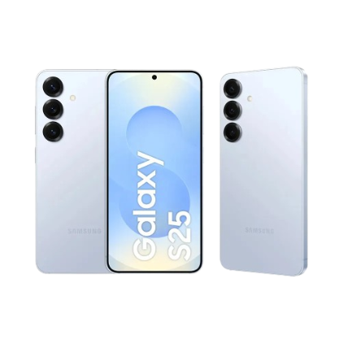
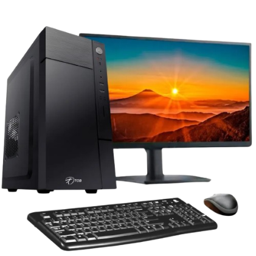

!DOCTYPE
<
Maquina de lavar: automática padrão
(como os modelos de 12 kg a 15 kg mais comuns no mercado) incluem capacidade de lavagem em peso seco, voltagem de 127V ou 220V,
potência média entre 400W e 600W 
-
O Samsung Galaxy S25 é um smartphone compacto topo de linha com tela AMOLED
de 6,2 polegadas (120 Hz), processador Snapdragon 8 Elite, 12 GB de RAM, câmera principal de 50 MP e bateria de 4.000 mAh

 >
>